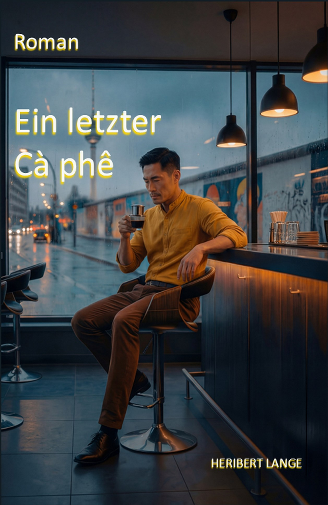
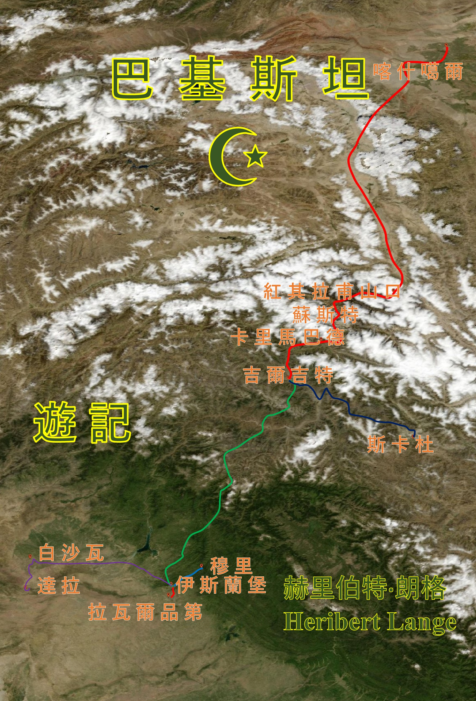

我的書收到的評價
讀者對我的書寫下了什麼，用他們自己的話。以下評論原刊載於 Amazon.de，原文為德文，此處為中文翻譯。

《最後一杯 Cà phê》不是可以隨手翻翻、利用空檔閱讀的書。赫里伯特·蘭格敘述得詳盡，並且滿懷對細節的熱愛。他帶領讀者前往不同的地方，介紹眾多人物及其人生故事，並由此逐漸生出數條情節線索。尤其是各處場景描寫得如此細緻，讀者真的會有與人物一同上路的感覺。人際關係與個人命運在此與犯罪懸疑元素相遇，形成一個多層次的故事。偏愛節奏明快、情節直線推進的人，必須先適應這種詳盡的敘事方式。反之，喜歡深入故事、結識眾多人物、享受細節與各種場景的人，在這裡會讀到非常豐富的內容。一部篇幅宏大、層次豐富的長篇小說，值得花時間細讀。
譯自德文原文
這不是可以隨便讀讀的書，你會細細品味，並陷入由愛情、犯罪與多層次的諸多轉折所構成的漩渦。書中人物非常真實，閱讀時腦海中會浮現畫面。文筆令人信服，引人入勝。關於內容我不透露，簡介已提供一些概覽。我只能推薦這本書。
譯自德文原文

這份旅行報告是一份珍貴的文獻，適合所有想了解巴基斯坦本質的人。它在陌生與熟悉之間架起一座橋樑，卻不流於俗套。強烈推薦給在旅遊文學中尋找真正火花的探索者。
作者不是交出一份「完美複製」的旅行體驗，而是分享真實、未經修飾的印象。每一行都散發著出發的精神與坦誠的好奇。這種文字風格像是對巴基斯坦同時具有的混亂與美麗所作的一種有序的回響。赫里伯特·蘭格描寫巴基斯坦的好客與人情溫暖，其強度讓這個國家變得可以觸摸。
譯自德文原文